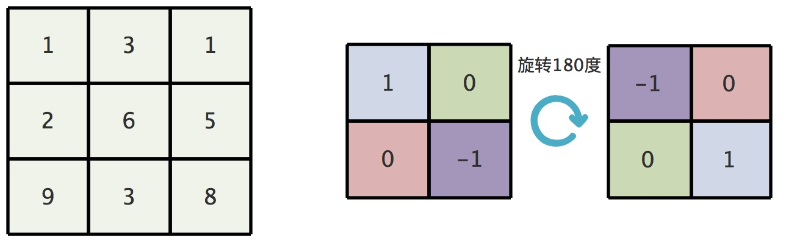
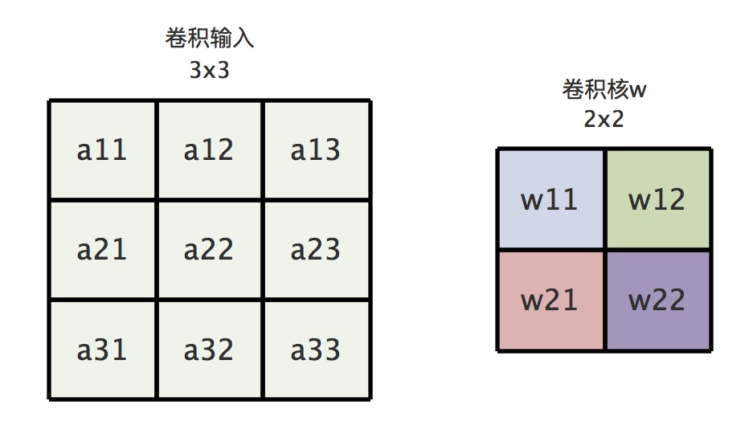
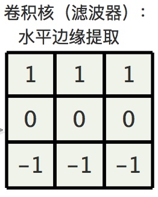
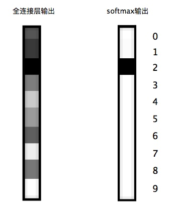
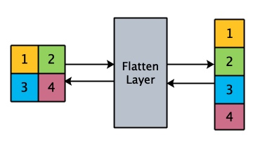
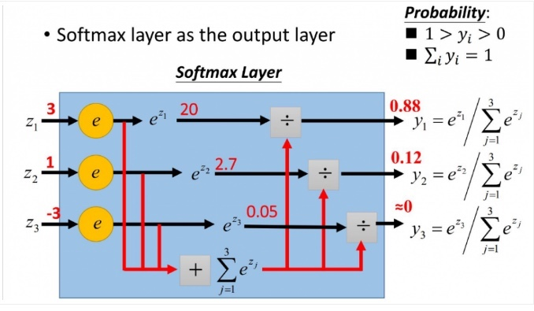
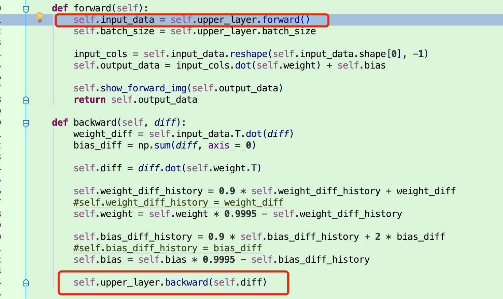
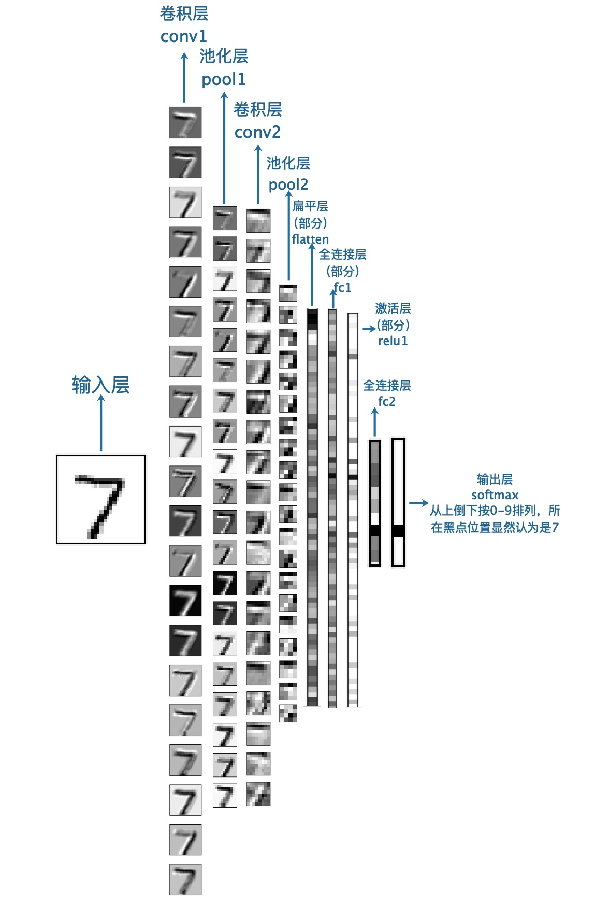
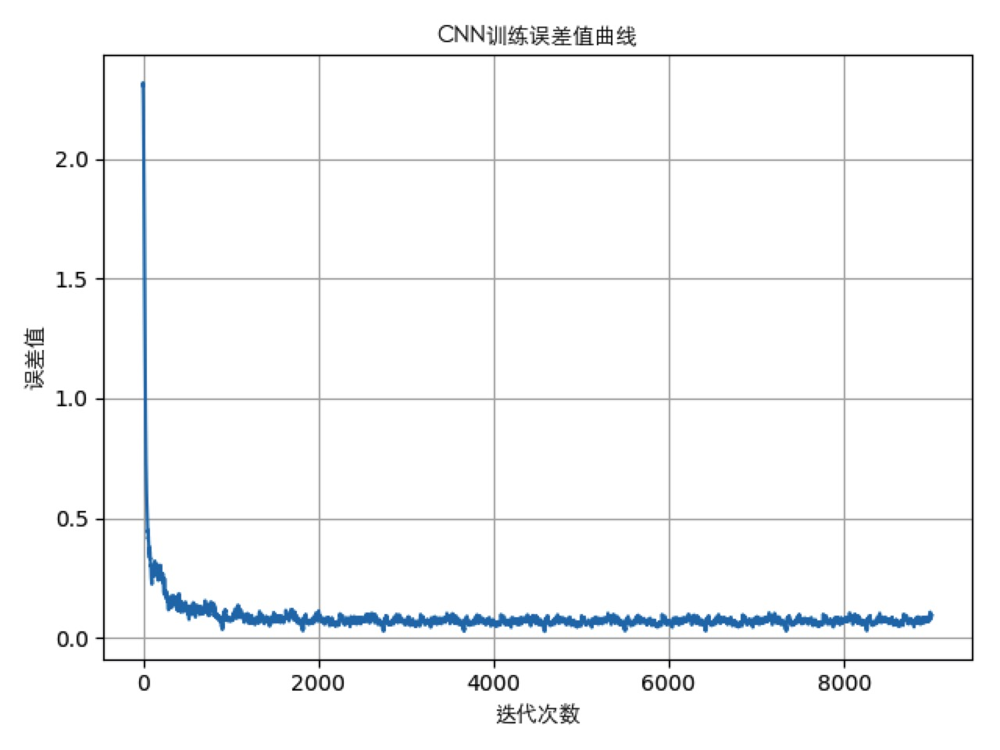

导语：
很多人习惯于用ML框架来玩CNN，但是具体的算法细节不甚关心。本文着手于CNN的运作原理的详解，到算法推导以及算法的代码实现，带你走进更为广阔的AI世界。
一. 我是谁，我在哪：
-
阅读本文的基础：
我会认为你对BP神经网络有充分的了解，看过我前两篇文章，有些点我会直接从前文直取而引。 -
上两篇笔记的传送门：
-
CNN算法难点主要还是在卷积层的反向传播上，其他的还好。
-
文章会从CNN的原理介绍开始，然后过渡到算法推导，最后是算法的实现。
-
如果要使用既有框架，首选caffe
二. 卷积神经网络的基本结构和效果体验
1. LeNet-5
-
在这篇笔记里，我打算用 LeNet-5 这一经典结构作为范例，来说明卷积神经网络的原理。
-
LeNet-5 是 Yann LeCun 在1998年设计的用于手写数字识别的卷积神经网络，当年美国大多数银行就是用它来识别支票上面的手写数字的，它是早期卷积神经网络中最有代表性的实验系统之一。
2. LeNet-5结构图：
我先不会细说这个图，放图的目的是先有个感性认识。我们可以看到，卷积神经网络的基本构成是：
- 数据输入（Input）
- 卷积层 （Convolution Layer）
- 池化层（Pooling Layer）
- 全链接层 （Fullconnection Layer）
- 结果输出 （output）

以CNN识别手写数字的经典范例来体验一下：
-
一个是LeCun主页里的，动态图左边依次是各个网络层输出数据的模样，右边是LeNet-5的数字识别结果：【传送门】[3]

-
还有这个，你可以自己改变网络结构，验证模型的效果，强烈推荐！【传送门】[4]

-
一个更好玩的是，自己用鼠标写数字，可以看到每一层的输出，并且是3D的，可以自己随意调整观察角度：【传送门】[5]

三. 一层一层的剥洋葱
1. 卷积层（Convolution Layer）
1.1 什么是卷积
一维卷积：
经常用在信号处理中，用于计算信号的延迟累积。其实没那么抽象和高深，举例（先声明，本人拒绝暴力）：
电影《我的野蛮女友》里，男主牵牛经常被女主明熙揍，以牵牛打脸举例
牵牛惹明熙生气了，明熙反手就是一巴掌打在牵牛脸上，牵牛脸肿了，完全消肿是需要一定时间的
但是明熙没有给牵牛时间，一巴掌没过瘾，反手又是一巴掌打在相同位置上。那么问题来了，这个时候怎么计算牵牛的脸肿到什么程度呢？要知道上一巴掌还没消肿，一波未平一波又起。
为了计算这个肿的程度，就得用卷积。因为显然的，牵牛的脸肿的程度，和上一个巴掌也有关系，所以卷积的计算需要沿时间轴翻转；又因为上一个巴掌的肿是会随着时间消退的，所以卷积计算需要沿着时间轴滑动，然后计算出延迟累积，就得到了打第n个巴掌后，牵牛脸肿的程度。
牵牛真可怜...
上面就是对卷积的直观解释，这个时候再看公式，应该很简单了：
y(n)=w(n)∗x(n)=∑i=−∞∞w(i) x(n−i)(1.1)其中，∗号代表卷积运算,n代表第几次打脸y(n)代表打第n个巴掌造成的脸肿程度w(n)代表打第n个巴掌的姿势，姿势不同，力度不同，打脸效果会不一样x(n)代表打第n个巴掌时候的脸，x(n−i)代表翻转，当前时刻的脸的模样是和前n次被打有关联的
二维卷积：
说白了就是给图片上滤镜，爱自拍的美女鲜肉们，你们没少用吧？
给定一个图像 X∈ℝM×N,滤波器 W∈ℝm×n,一般 m<<M, n<<N,其卷积为：y(n)=w(n)∗x(n)=∑a=1m∑b=1nwab⋅xi−a+1, j−b+1(1.2)其中，∗号代表卷积运算
二维卷积的公式要这样理解，w认为是卷积核，由于卷积是满足交换律的，即AB=BA，上面的公式x需要翻转，但一般做法是，翻转卷积核180度，然后做滑动累积求和。下面的图告诉你怎么做，GIF做得略简陋，凑合着看吧：
先把卷积核翻转180度
然后从左到右从上到下滑动，每个窗口各个元素相乘后求和，就是当前位置的卷积输出。
例如： 1x(-1）+ 3x0 + 2x0 + 6x1 = 5，其他同理。

1.2 什么是互相关，为什么机器学习其实用的是互相关而不是卷积，却号称是使用卷积
定义：互相关(cross-correlation) 是一个衡量两个序列相关性的函数，通常是用滑动窗口的点积计算来实现。
Tips:
在机器学习领域，卷积的主要功能是在一个图像或一个特征上滑动卷积核（滤波器），以得到一组新的特征。
看过Andrew Ng的深度学习视频的同学都知道。他在视频中提到过，机器学习场景下，卷积其实是不需要做卷积核翻转180度的操作的。
不翻转的卷积，是不满足卷积的交换性的，但是对于机器学习来说，满不满足交换律根本无关紧要，反而省略掉卷积核的翻转操作，可以简化实现。
所以机器学习里提到的卷积其实不是真正的卷积，严谨的来说叫“互相关”，或者成为“不翻转卷积”，只是大家在写论文的时候习惯了用卷积这个名词，来显得好听高大上点而已。
看看互相关的公式，注意看和公式（1.2）的差异，符号变为正号，说明互相关和卷积的差别在于，互相个是不需要做翻转操作的：
看看不翻转时，卷积结果如何：

1.3 为什么要用卷积
-
局部连接 - 可以使得网络能提取到局部特征，而不再只是全局的：
上一篇文章《CNN的导火索，用MLP做图像分类识别？》 已经说过，全连接会使得神经网络权重呈指数级膨胀，会让计算量陡增，网络难以训练。卷积采用的是局部连接的方式，即卷积层输出对应看成是一个神经元在输出，每个神经元只感受局部，相当于它的“视野”只关注特定区域。这样使得神经层之间的连接数量大大减少。局部连接的思想，也是受启发于生物学里面的视觉系统结构，视觉皮层的神经元就是局部接受信息的。举例子：假设卷积层的输入是 3x3 = 9 的，卷积核大小是 2x2 = 4
- 如果使用全连接方式，那么该层神经元的连接数是 9x4 = 36
- 如果使用局部连接方式，那么该层神经元的连接数是 (（3-2）+ 1)x4 = 16
局部连接的计算公式后面再说。
4
卷积层的输出也是 Z = 2x2 = 4的，可以理解层有4个神经元，那么每个神经元关注的视野可以看下图:
当卷积核在图像上从左到右从上到下滑动时，就可以看出，每个神经元只对特定区域的感兴趣，也就是所谓的“局部野”。
卷积层输出：Z=W⊗a+b

-
权重共享 - 可以降低计算量
一个2x2大小卷积核，那么卷积层的权重w个数就是4个，可以卷积层和上一层的连接是共享权重的，当做卷积操作时，观察卷积核的每一个权重扫描过的位置，就知道那些输入是共享同一个权重了。

如果画成我们熟悉的神经元连接图，那就可以很直观的看到权重是怎么共享的了：

总的来说，权重共享的意义在于：
-
降低参数数量，从而大大降低运算量
-
从生物学的角度去理解权重共享，相邻神经元的活性相似，从而可以它们共享相同的连接权值。并且卷积核就是一个滤波器，某个滤波器提取特定的特征，这种提取方式与图像等数据的位置无关。所以，对于同一个卷积核，它在一个区域提取到的特征，也能适用于于其他区域。
-
由于参数共享，即使图片进行了一定的位移，其原来的特征仍然可以被提取到，这一“平移不变性”使得神经网络泛化能力更强。
-
1.4 卷积是怎么做到特征提取的？
卷积核（滤波器）其实就是通过增强特定区域，过滤掉不感兴趣的区域，达到特征提取的功能。比如做水平边缘特征提取，那滤波器设计就沿着水平方向保留原始特征，垂直方向的特征则弱化或过滤。所以水平边缘特征提取的卷积核，水平方向的数值是不变的，看滤波器数值，水平方向都是[1,1,1],[0,0,0],[-1,-1,-1];而垂直方向都是[1,0,-1],当做卷积计算时，垂直方向的信息就被求和弱化，自然就过滤掉了垂直方向的信息。

举例，对图像分别做水平，垂直方向的特征提取。仔细观察卷积输出图像的效果差别，水平和垂直的特征在使用不同的卷积核分别被提取了出来。

1.5 卷积的类型
我们是上面举的例子，都是没有做边界填充，并且卷积核移动的步长都是1。但是原始图像经过卷积后，图像大小会变小，随着网络加深，那么处理后的图像会越来越小，会不断的损失边缘信息。那么有些场合下，是需要通过边界零填充，来保障卷积计算前后图像尺寸维持不变。
卷积输出图像尺寸的计算公式如下：
o=n+2p−ks+1其中，o为输出大小，n为输入图片大小，p为边界填充大小，k为卷积核大小，s为步长例如：输入图片尺寸是3×3，卷积核是2×2，边界填充p=0，步长为1，那么输出图像大小就是：o=3+2∗0−21+1=2,正方形图像，那么输出就是2×2大小
具体类型的效果
窄卷积（无边界零填充卷积），我们上面举例的卷积都没有做边界零填充（Zero Padding），移动的步长是1，看图：
宽卷积（有边界零填充卷积），可以看到做了边界填充，卷积后输出图像和输入图像尺寸是一样的
步长不是1时，下图是个步长为2的卷积示例：
还有很多种类型的卷积，比如转置卷积，空洞卷积等，这里就不介绍了。


1.6 卷积层小结
- 本节介绍了卷积层的工作原理和计算方式
- 卷积层就是一堆卷积核（滤波器）提取不同的图像特征
- 卷积层通过局部连接和权重共享，达到降低参数数量，简化计算的目的
- 由于卷积“局部野”作用，图像产生一定位移，变形，也不会影响到特征的提取，使得网络泛化能力得到提高。
2. 池化层（Pooling Layer）
2.1 什么是池化层：
池化层的上一层一般是卷积层，即卷积层的输出就是池化层的输入。池化层也可以成为“降采样”层，降采样就是选取出每个区域中的最大值(max-pooling)或是平均值(mean-pooling)。本文以max-pooling为例讲解。
2.2 池化层的运作原理：
先上公式，池化层输入和输出的关系：
o=n+2p−ks+1其中，o为输出大小，n为输入图片大小，p为边界填充大小，k为池化窗口大小，s为步长例如：输入图片尺寸是6×6，池化窗口大小是3×3，边界填充p=0，步长为3，那么输出图像大小就是：o=6+2∗0−33+1=2,正方形图像，那么池化输出就是2×2大小
直观一点的效果：左边的图片是卷积层的输出图片，输入到池化层后得出的效果为右边图片：

max-pooling的计算过层，把每个池化窗口的最大值取出来，这就是所谓的降采样过程：

2.3 池化层的作用：
-
可以从上面的数字计算图看到，max-pooling就是挑选特定区域中的最大值的过程。通过消除非极大值，进一步的减少了参数数量，降低了上层的计算复杂度，防止因参数过多带来的过拟合。
-
在同一区域，最大值不论在区域的任何位置，池化的结果都不会改变。比如上图的最大值换了个位置，池化输出都能保留该区域最显著的特征，这样的好处就是，即便图片发生了一定的位移，旋转，形变，神经网络都能正确的识别图像的结果，神经网络的鲁棒性大大提高。
就和人写字一样，字写歪了写丑了一点，但没关系，依然能看得出来是哪一个字。

2.4 池化层小结：
池化层原理是比较简单的，但是好处也是明显的。减少参数的同时保留住了图像的显著特征。所谓降采样，作用更像是一个降噪的过程，对网络的稳定性提供了保障。但是池化层也有缺点，在网络的反向传播过程中，不管是max-pooling还是mean-pooling，都无法还原全部原始的信息。个人理解，在做梯度下降计算误差时，由于丢失了一部分原始信息，所以得到的误差更类似于一个最大似然的值。虽然对网络训练有影响，但是影响程度不大。
3. 扁平化层（Flatten Layer）
Flatten层一般在卷积层或者池化层之后，全连接层之前。作用就是降维，把2D的数据1D化，也就是扁平化的意思。因为全连接层的输入一般是1维的，所以在数据进入全连接层前，Flatten层就充当了数据预处理的角色。

4. 全连接层（Full Connection Layer）
全连接层应该都很熟悉了，参考我之前写的《AI从入门到放弃：BP神经网络算法推导及代码实现笔记》。经过卷积层和池化层后，得到一系列特征图，全连接层的作用就是特征分类器，经过特征分类后得到类型的概率分布，最后将全连接层的输出经softmax处理得到具体的判定类型的概率值。

5.Softmax层（Softmax Layer）
Softmax一般是在全连接层后。以手写数字分类，数字从0到9，经过全连接层分类后，有十个输出，分别对应10个分类特征，但是并不直观。softmax函数的作用就是把这10个特征映射成概率（0，1）的10个概率值，概率最高的就对应某个数字，如下图：

再拿网上的一张图，可以看到softmax的算法结构，原来输出是3,1,-3通过softmax函数一作用，就映射成为(0,1)的值，而这些值的累和为1（满足概率的性质）。可能有的同学会问，为什么还要softmax，直接看全连接层的输出，挑最大的也可以得到结果啊？答案是这一切都是为了算法服务的，别忘了后面还有梯度下降算法，softmax就是把统计输出在概率上归一化，神经网络误差计算需要这么做。另外，softmax函数使用指数函数，误差求导的时候也便利很多，因为指数函数的导数就是它本身。
四. CNN的正向传播算法
1.卷积层（Convolution Layer）的正向传播计算
1.1 正向传播

前面介绍过了，在CNN中，所谓的卷积运算是“互相关”，或者称为“不翻转卷积”。如上图所示，那么卷积层的前向传播过程为：
假设第l层为卷积层，为不失一般性，假设前一层(第l−1层)使用了激活函数σ ;来自前一层(第l−1层)的输出 zl−1经过激活函数激活后作为卷积层的输入，即:al−1=σ(zl−1), 且 al−1∈ℝM×N;设卷积核 W∈ℝm×n, 一般 m<<M, n<<N;卷积输入的下标为i∈ℝM, j∈ℝN,那么卷积层的正向传播输出zl表示为：zl i, j=Wl∗al−1i, j+bli, j=Wl∗σ(zl−1i, j)+bli, j=∑u=1m∑v=1nwuvσ(zl−1i+u−1, j+v−1)+bli, j(4.1)注：用下标索引到卷积核的元素是，用小写的w加下标表示。
1.2 反向传播
1.2.1 卷积层误差的梯度算法
思路： 可以对比MLP的BP算法，反向传播过来的误差，通过矩阵运算将误差往前传递。观察卷积层，在反向传播时，误差可以类比为通过卷积运算往前传递。让我们开始吧：

如上图，假设第l层为卷积层，且第(l−1)层输出使用了激活函数σ;卷积层的误差为δl,反向传播后到上一层的误差为δl−1;从正向传播计算知：al−1=σ(zl−1), 且 al−1∈ℝM×N;设卷积核 W∈ℝm×n, 一般 m<<M, n<<N;卷积输入的下标为i∈ℝM, j∈ℝN;卷积层的误差为J（W,b),梯度为δl;我们的目标是：计算出经过卷积层反向传播到第（l−1）层的误差的梯度δl−1:δl−1i, j=∂J(W,b)∂zl−1i, j, 根据链式求导法则： =∑i′=1m∑j′=1n∂J（W,b)∂zli′, j′∂zli′, j′∂zl−1i, j 其中i′,j′为卷积层（l层）的卷积运算下标, 撇号这里只是为了和第（l−1）层的i, j做区分，并不是导数，将式（4.1）代入，接着算： =∑i′=1m∑j′=1nδli′, j′∂(∑mu=1∑nv=1wlu, vσ(zl−1i′+u−1, j′+v−1)+bli′, j′)∂zl−1i, j 注意这个式子，不要怂一起上，求关于 zl−1i, j 的偏导，偏置 bli′ 为常数，求导数的时候为0； wlu, v也为常数，现在关键看∂(σ(zl−1i′+u−1, j′+v−1))∂zl−1i, j是什么东西， 这明显是第(l−1)层激活函数σ关于第(l−1)层的输出zl−1的导数； 注意观察,根据求导法则，求和序列的偏导数是和顺序无关的，这里必然满足:i=i′+u−1, j=j′+v−1; =∑i′=1m∑j′=1nδli′, j′wlu, vσ′(zl−1i, j) 卷积层的下标:u=i−i′+1, v=j−j′+1, 代入换算后的坐标继续算： =∑i′=1m∑j′=1nδli′, j′wli−i′+1, j−j′+1σ′(zl−1i, j)【敲黑板时间】:翻回去看式（1.2），是不是和真正的卷积计算表达一样？ 也就是说，如果CNN使用的是真正的卷积，那么我们的结果直接写成 δl∗ wli, jσ′(zl−1i, j), 但是！CNN里用的是“不翻转卷积”，所以CNN中的运算符 ‘∗‘ 不是表达为真正的卷积， 所以我门的最终结果是: δl−1=δl∗ wl−i, −jσ′(zl−1i, j) 显然：−i, −j 说明卷积核 w 的横轴和纵轴相位相反，二维上的说法就是整个儿翻转了180∘, 这里用 ROT180 表示这个操作,即： δl−1=δl∗ ROT180(wl)⊙σ′(zl−1i, j), (4.2)【这里特别说明一下,当公式的运算量不是用标出下标的写法而是矩阵时，⊙表示为矩阵的Hadamard积, 不是矩阵乘法，这里不赘述，请自行度娘;下文遇到该运算符同此，不再做说明】 如果第l−1层没有激活函数的话，即σ(zl−1)=zl−1,那么激活函数的导数：σ′(zl−1i, j)=1，那么此时： δl−1=δl∗ ROT180(wl)(4.3) 【卷积层误差梯度计算说明】：注意这里设偏置b为0，所以表达的是偏置为0的卷积计算。δl是上一层的反向误差梯度， 是已经计算出来了的,它对卷积层而言就是一个常数,而且卷积核 w 也是已知量。所以卷积层的误差梯度计算就是， 拿δl与卷积核 w 旋转180∘后做“不翻转卷积”计算即可，是不是很简单。
1.2.2 卷积核 w 的误差梯度算法
模型要更新，那么同样需要卷积层的卷积核w和偏置b的梯度。有了误差梯度计算的基础，算卷积核的梯度就容易理解的多了，开始吧。
∂J（W,b)∂wli, j=∑i=1m∑j=1n∂J（W,b)∂zli, j∂zli, j∂zl−1i, j,根据链式求导法则：=∑i=1m∑j=1nδli, j∂(∑mu=1∑nv=1wlu, vσ(zli+u−1, j+v−1)+bli, j)∂wli, j=∑i=1m∑j=1nδli, jσ(zli+u−1, j+v−1), 此时偏导量为w,因为w对自身求导，导数为1。=δl∗σ(zl) (4.4)【卷积核梯度计算说明】：注意这里设偏置b为0，所以参考式（4.1）就知道是偏置为0的卷积的表达式
1.2.3 卷积层偏置 b 的误差梯度算法
同理，计算偏置b的梯度：
∂J（W,b)∂bli, j=∑i=1m∑j=1n∂J（W,b)∂zli, j∂zli, j∂bl−1i, j,根据链式求导法则：=∑i=1m∑j=1nδli, j∂(∑mu=1∑nv=1wlu, vσ(zli+u−1, j+v−1)+bli, j)∂bli, j此时偏导量为b因为b对自身求导，导数为1；而∑u=1m∑v=1nwlu, vσ(zli+u−1, j+v−1)不包含b，对b的偏导数为0，所以最终计算结果为：=∑i=1m∑j=1nδli, j（0+1）=∑i=1m∑j=1nδli, j (4.5)【卷积层偏置的梯度计算说明】：所以偏置b的梯度更简单，就是卷积层的误差δl
卷积层反向传播算法总结：
-
卷积层的反向传播计算，就是套用链式求导法则计算偏导数而已，CNN的卷积运算指的是“不翻转卷积”，一定要理解这种卷积计算和信号系统中的卷积计算的区别。
-
CNN之所以使用“不翻转卷积”，是因为神经网络的场景真的不需要满足卷积的交换律，少了一次反转，简化计算，降低实现难度，要知道卷积神经网络的计算量大的惊人，任何看似简单的计算，算的次数多了，那它就是个性能杀手。
-
需要求出误差的梯度，卷积核的梯度，以及偏置的梯度，这几个梯度是做模型训练的核心依据。
-
如何使用这些梯度去更新卷积层的卷积核w和偏置b，有很多种优化算法，如SDGA，Adagrad，Adadelta，Adam，RMSprop等。这些优化算法可以有效帮助CNN模型快而稳的收敛。
-
CNN的反向传播算法最难的就是卷积层了，其实也没多难嘛。搞明白了卷积层的反向传播计算，其他层的反向传播算法就简单的多了。
2. 池化层（Pooling Layer）的正向传播计算
2.1 正向传播
以最大池化为例，如下图所示，按照池化窗口和指定的步长，取窗口内最大值作为池化层正向传播的结果。这里假设输入为变长为n的正方形图片，池化窗口大小k=2，步长s=2，无零填充p=0,那么池化层输出的图片大小为 (n + 2p - k)/2s=(4 + 20 - 2)/(21) = 2 。
在数字信号处理中，我们把这种处理称为下采样（Subsampled）或降采样（Downsampled）。作用是缩小图像到一定的大小，去除冗余信息，保留图像的重要特征。目的是降低图像后续处理的数据处理量，进一步提取有效特征。

如上图，假设假设第l层为池层，池化层使用最大池化法（Max Pooling）;上一层的输出为al−1;池化层输出为zl;设池化层下采样算子表达为 SubSample();则池化层正向传播计算式为：zl = SubSample(al−1)(4.6)如果池化层的上一层（l−1）层有激活函数，那么 al−1=σ(zl−1),则：zl = SubSample(σ(zl−1))(4.7)
Tips: 我知道，肯定有小伙伴可能在想一个问题，为什么有了卷积层，还得要个池化层，毕竟卷积层也可以缩小图像，提取特征啊？
答：卷积层通过卷积核提取的多为边缘特征，深度更深的模型下，为了保留图像信息，通常会让其中有些卷积层使用零进行边界填充（Zero Padding）图像后再进行卷积计算，这样输出的图像大小是不变的。和卷积层不同，池化层通常是紧接在卷积层的下一层，图像经过池化层后，图像会变小，但是得到的是卷积层输出图像整体的概要统计特征 。得到的特征维度较低，整体特征保留较好。这点其实也很重要，因为特征完整度保留住了，使得结果得到改善，神经网络不那么容易过拟合，这是池化层存在的意义。
2.2 反向传播
池化层的反向传播也不难，以最大池化法为例：实现方法是记录下正向传播的时候记录下池化窗口最大值在图像的位置，反向传播的时候，把误差值按照记录好的位置放置，其余位置的值为零，池化层的反向传播的计算就完成了。在数字信号处理中，这种处理称为上采样，这里用 DownSample() 算子做表达。如下图所示：

如上图，假设假设第l层为池层，池化层使用最大池化法（Max Pooling）;池化层的误差梯度为δl,;经池化层反向传播后，上一层的误差记为J；误差的梯度为δl−1。且池化层上一层的输出限定为 al−1∈ℝM×N;池化后的输出zl∈ℝm×n;一般 m<<M, n<<N;池化层记录下的最大池化的元素位置下标集合记为 {Max Index} ;那么有：δl−1i, j=∂J∂zl−1i, j =∂J∂zli′, j′∂zli′, j′∂zl−1i, j =δli′, j′∂(UpSample(σ(zl−1i, j)))∂zl−1i, j = {δli′, j′σ′(zl−1i, j),i′∈ℝm, j′∈ℝnWhen i,j∈{Max Index}0,i, j∉{Max Index} = DownSample(δl)⋅σ′(zl−1i, j) (4.8) 把上面的式子简化一下，使用下采样算子 DownSample() 代替; 该算子包含对索引下标的映射处理，所以 δl 没有标出下标; 如果池化层上一层(一般是卷积层)没有使用激活函数 σ，那么σ′(zl−1i, j)=1，这一点一定要清楚。
3. 扁平化层（Flatten Layer）的正向传播计算
-
所谓的Flatten Layer，其实不能算是真正意义的“层”，通常用在从卷积层到全连接层的数据维度的转换适配。所以它的正向传播就是把图像降维，方向传播就是把数据升维到原来的样子，如下图：

-
如果真要写成数学表达式
正向传播：设第 l 层为Flatten层，第l−1层的激活输出记为al−1;且有 a=σ(zl−1)，其中σ为激活函数，zl−1为第l−1层的输出,那么Flatten层的正向传播输出为：zl = Flattened(al−1) = Flattened(σ(zl−1))(4.9)反向传播：第l层的误差梯度为δl,求第l−1层的梯度δl−1,不闹腾，直接写出式子：δl−1 = UnFlattened(δl)⋅σ′(zl−1)(4.10)
4. 全连接层（Full Connection Layer）的正向传播计算
4.1 正向传播
其实不想写全连接层，之前写的文章里介绍得很详细了。为了文章的完整性，这里简单写一下。
全连接层可以由若干个隐藏层。第一层是输入层，最后一层是输出层。看下图，其实就是一个多层神经网络。

设全连接层的激活函数为σ,一共有L层全连接层，构成DNN;设输入层数据为x;训练数据集的标定输出为y;输出层为第L层，输出层的激活输出为aL;w为神经元权重，权重向量大写表示为W;b为神经元偏置;那么DNN的正向传播算法分层表示为：1. 输入层：a1=x(4.11)2. 隐藏层和输出层：al=σ(zl)=σ(Wlal−1+bl),其中 l∈{2,3,..,L}(4.12)
4.2 反向传播
设全连接层的激活函数为σ,一共有L层全连接层，构成DNN;设输入层数据为x;训练数据集的标定输出为y;输出层为第L层，输出层的激活输出为aL;w为神经元权重，权重向量大写表示为W;b为神经元偏置;这里偷个懒，不用交叉熵作为误差函数，而是使用简单的均方差函数；其实代码实现的时候，换代价函数只是替换掉公式对应误差层函数的导数结果的部分就行了。记均方差误差函数 J(W,b,x,y)=12∥∥aL−y∥∥22;又因为上面推导的输出层的正向输出为 aL=σ(zL)=σ(WL−1aL−1+bL)，那么：1. 输出层(第L层)的误差的梯度计算：δL=∂J(W,b,x,y)∂zL=(aL−y)⊙σ′(zL)2. 输出层(第L层)的神经元权重W的梯度计算:J(W,b,x,y)=12∥∥aL−y∥∥22=12∥∥σ(WLaL−1+bL)−y∥∥22，那么输出层的误差梯度：∂J(W,b,x,y)∂WL=∂J(W,b,x,y)∂zL∂zL∂WL=(aL−y)⊙σ′(zL)(aL−1)T(4.13)注：T表示矩阵转置运算。3. 输出层(第L层)的神经元偏置b的梯度计算:∂J(W,b,x,y)∂bL=∂J(W,b,x,y)∂zL∂zL∂bL=(aL−y)⊙σ′(zL)(4.14)4. 注意到隐藏层，和输出层不一样，隐藏层的误差是经过输出层（第L层）逆向层层传递的；用递推法，隐藏层(第l层，l∈{2,3,..,L−1})的误差梯度计算：δl=∂J(W,b,x,y)∂zl=∂J(W,b,x,y)∂zL∂zL∂zL−1∂zL−2∂zL−3...∂zl+1∂zl(4.15)我们要求第l层的误差梯度δl,由于第l+1层的误差梯度δl+1是已经求出来了的已知量，又因为：δl=∂J(W,b,x,y)∂zl=∂J(W,b,x,y)∂zl+1∂zl+1∂zl=δl+1∂zl+1∂zl (4.16)现在的关键就是把∂zl+1∂zl求出来，然后利用归纳法就能求出第l层的误差梯度。zl+1=Wl+1al+bl=Wl+1σ(zl)+bl,所以求其偏导∂zl+1∂zl=（Wl+1）T⊙σ′(zl),代入式（4.16）得到:δl=δl+1∂zl+1∂zl=(Wl+1)Tδl+1⊙σ′(zl)(4.17)5. 隐藏层（第l层，l∈{2,3,..,L−1}）的W，b的梯度;注意到 δl=∂J(W,b,x,y)∂zl,则:∂J(W,b,x,y)∂Wl=∂J(W,b,x,y)∂zl∂zl∂Wl=δl(al−1)T(4.18)∂J(W,b,x,y)∂bl=∂J(W,b,x,y)∂zl∂zl∂bl=δl (4.19)所以，利用公式(4.17)，(4.18),（4.19）；层层递推，遍历一遍所有的隐藏层，所有的梯度都能算出来。
5. Softmax层（Softmax Layer）的正向传播计算
5.1 正向传播
看刚才的图:

输入特征向量z∈{0,n}，那么softmax值为：yi=ezi∑jezj,其中：j∈[1,n] (4.20)从式子上可以看到，输入特征对输出概率的计算是乘性的，指数e也提供了良好的导数性质，给计算带来很多便利。
5.2 反向传播
在之前的文章说过，在分类问题中，会选一个损失函数计算误差，常用的是交叉熵函数：Lossi=−∑tilnyi (4.21)其中,ti表示真实值，yi表示softmax输出值。当预测第i个特征的概率的时候，必然认为ti=1。此时损失函数变成：Loosi=−lnyi(4.22)然后我们要做的是，将误差进行反向传播，即对损失函数进行求导。由于：yi=ezi∑jezj，要清楚一点，softmax已经将输出映射到了区间[0,1],那么：∑yi=∑ezi∑jezj=1(4.23)所以第softmax第i个输出值可以表示为：ezi∑jezj=1−∑j≠iezj∑jezj(4.24)对式（4.21)偏导数：∂Lossi∂i=−∂lnyi∂i=∂(−lnezi∑jezj)∂i=−1ezi∑jezj⋅∂(ezi∑jezj)∂i=−∑jezjezi⋅∂(1−∑j≠iej∑jezj)∂i=−∑jezjezi⋅(−∑j≠iezj)⋅∂(1∑jezj)∂i=∑jezj⋅∑j≠iezjezi⋅−ezi(∑jezj)2=−∑j≠iezj∑jezj,这时候观察式子(4.24)=1−ezi∑jezj=yi−1所以第i个特征的误差梯度就是它的softmax输出减去1，很简单。
五.程序设计和效果
5.1 核心思路
5.1.1 分层设计
按照LeNet-5所设计的网络层逐一实现，每一层都有正向传播，反向传播，以及获取上一层的输出以及自己正向传播输出的接口，例如全连接层的设计，其他层均具备这些接口

5.1.2 链表式连接
把所有网络层的输入和输出通过链表节点传递，通过实例化CNN_Network，把所有网络层按顺序声明，每一层的参数没有做强校验，所以网络上下文参数自己要算好，否则网络无法运行。
PS：
- batch_szie: 训练时使用多大的图片集合，卷积网络不是使用单张图片进行梯度下降训练的，而是每次一小批送入
- test_size: 测试网络模型使用多少张图片，可以同时观察N张图片的预测结果
- epoch：最大迭代周期数，一次迭代周期 = 训练集合图片总数/batch_size
- base_lr：初始化学习率
- l2_regulation: l2正则项（暂时没有用到...）
当调用forward接口进行正向传播时，每一层网络的正向传播接口得以调用，反向传播同理


5.2 程序使用方法
注释写得很清楚了，要注意的一点就是，训练的时候，会定义early-stop的条件,当满足条件时，会调用snapshot()函数，将训练好的网络模型快照下来保存到Model/model.h5中。

5.3 关于代码实现的建议
- 网络层的实现时严格按照上文的算法推导出来的公式做的，所以想要看懂代码，必须先看懂数学算法的推导原理和过程。
- 卷积层的卷积运算使用到了一些巧妙的设计，设计到的核心函数我都写了十分详细的注释在代码中，文章篇幅有限，请自行阅读。
5.4 程序效果
按上面代码截图，网络结果设计为：
mnist_data(输入层) => 卷积层conv1 => 池化层pool1 => 卷积层conv2 => 池化层pool2 => 扁平层flatten => 全连接层fc1 => 激活层relu1 => 全连接层fc2 => 输出层softmax
想要程序把运行过程中每一层的输出可视化，那么需要打开开关：

程序输出效果如下,可以直观看到每一层输出特征，一直到最后的输出层，把结果标定出来。网络层次越深，特征被抽象得越来越反人类，已经没法直观的知道神经网络是怎么运用抽象特征的了：

5.5 卷积网络模型训练的精确度和误差
- 误差和精度随着迭代加深，网络平均误差也已经很难往0值收敛。
- 我写的这份代码，在计算梯度的时候，使用了类似退火算法来保证网络尽快而好的收敛，学习率也采取了同样的做法。但是要造好一个轮子，还是有很多事情要做的，比如梯度算法可以使用SGD；引入dropout层等等，通过这一系列措施来优化网络，网络质量会更高。


6.尾声
篇幅有限，无法面面俱到。关于代码实现，我还是坚持一点，只有自己实现过一遍CNN，任何关于算法的细节，任何参数的作用你就会一清二楚。只有吃透算法的任何一个细节，后面再接触LSTM，RNN，GAN等各种花式玩法的时候，慌是不可能慌的，这辈子都不可能慌，搞AI的哥哥都是人才，说话又好听，我超想放弃AI的。
参考资料
[1] http://yann.lecun.com
[2] http://yann.lecun.com/exdb/publis/pdf/bengio-95.pdf
[3] http://yann.lecun.com/exdb/lenet/index.html
[4] https://cs.stanford.edu/people/karpathy/convnetjs/demo/mnist.html
[5] http://scs.ryerson.ca/~aharley/vis/conv/